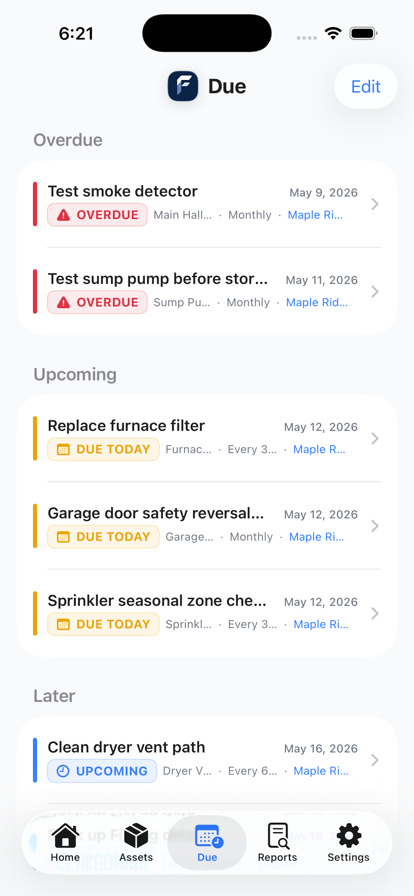
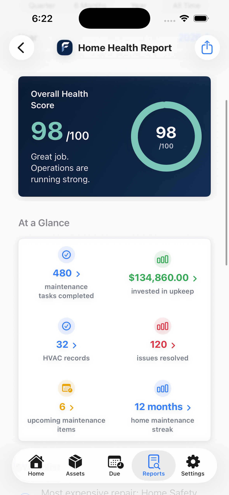
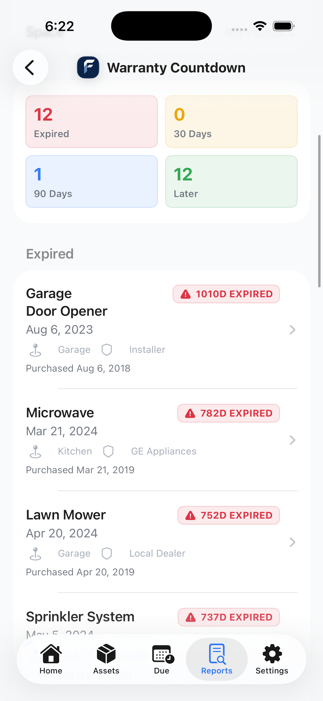
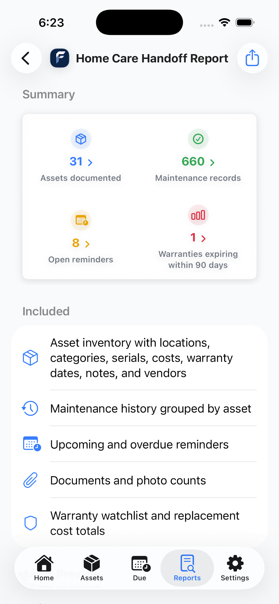

iPhoneHome
Overdue, upcoming, and expiring warranties at a glance.
For Homeowners
Track appliances, HVAC, plumbing, safety systems, and seasonal tasks. Get reminders before things break and keep a complete service history for every item you own.
The home screen shows overdue reminders, upcoming tasks, and warranty watch alerts in one view.
Overdue, upcoming, and expiring warranties at a glance.

All your home assets with photos and service history.

Overdue and upcoming tasks organized by priority.

Home Health Report with your overall maintenance score.

See expired and upcoming warranty expirations across all your assets.

Export a complete home care packet for a buyer, agent, or new owner.
FixLog includes pre-built templates for the most common home assets, with suggested reminders and custom fields already filled in.
Furnace & Air Filter, Central Air Conditioner, Mini Split, Water Heater, Whole House Humidifier, Attic Fan, Exhaust Fan.
Sump Pump, Water Softener, Sprinkler System, Main Water Shutoff, Garbage Disposal, Septic System, Well Pump.
Smoke Detectors, Carbon Monoxide Detectors, Fire Extinguishers, Radon Mitigation Fan, First Aid Kit.
Refrigerator, Dishwasher, Range & Stove, Washing Machine, Dryer, Microwave, Range Hood, Garbage Disposal.
Garage Door Opener, Deck & Railing, Gutters & Downspouts, Lawn Mower, Snow Blower, Sprinkler System, Pool.
Electrical Panel, Generator, Solar Panel System, EV Charging Station, UPS Battery Backup.
Set recurring tasks for filter changes, gutter cleaning, water heater flushes, safety tests, and seasonal maintenance. FixLog reminds you before things break, not after.
Log warranty dates, providers, and coverage details for every appliance and system. Warranty Watch shows anything expiring in the next 90 days right on your home screen.
Record what was done, when it happened, what it cost, and who did the work. Useful for warranty claims, insurance, and when you sell your home.
Attach warranty PDFs, manuals, receipts, inspection reports, and contractor invoices directly to the asset they belong to. Always there when you need them.
A summary report showing your overall maintenance score, completed tasks, costs, and open reminders. Useful for real estate disclosure or your own peace of mind.
Generate a complete home care packet including asset inventory, maintenance history, warranty status, and open reminders. Ready to share with a buyer or new owner.
The Real Cost of Reactive Maintenance
The difference between proactive and reactive maintenance is often thousands of dollars. FixLog helps you stay ahead of the schedule so you replace filters, not furnaces.
Home Resale Value
Buyers notice when a home has documented service history. FixLog's Home Care Handoff Report gives you a ready-to-share packet that shows everything that's been maintained and when.
Get Started Today
FixLog Pro is a one-time $39.99 purchase. Download free and explore with example home data before you buy.